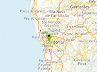

Custom system of markers for uGUI

Example of custom marker system for uGUI.
Usage instructions:
Add this script to map GameObject.
Use uGUICustomMarkerEngineExample.AddMarker to create new marker.
Add this script to map GameObject.
Use uGUICustomMarkerEngineExample.AddMarker to create new marker.
uGUICustomMarkerEngineExample.cs
/* INFINITY CODE 2013-2019 */
/* http://www.infinity-code.com */
using System.Collections.Generic;
using UnityEngine;
namespace InfinityCode.OnlineMapsExamples
{
/// <summary>
/// Example of how to create your own system of markers for uGUI.
/// </summary>
[AddComponentMenu("Infinity Code/Online Maps/Examples (API Usage)/uGUICustomMarkerEngineExample")]
public class uGUICustomMarkerEngineExample : MonoBehaviour
{
private static uGUICustomMarkerEngineExample _instance;
private static List<uGUICustomMarkerExample> markers;
/// <summary>
/// The container where markers will be created.
/// </summary>
public RectTransform markerContainer;
/// <summary>
/// Prefab of UI Marker
/// </summary>
public GameObject markerPrefab;
private Canvas canvas;
private OnlineMaps map;
private OnlineMapsControlBase control;
/// <summary>
/// Reference to marker engine.
/// </summary>
public static uGUICustomMarkerEngineExample instance
{
get { return _instance; }
}
/// <summary>
/// Reference to the camera
/// </summary>
private Camera worldCamera
{
get
{
if (canvas.renderMode == RenderMode.ScreenSpaceOverlay) return null;
return canvas.worldCamera;
}
}
/// <summary>
/// Creates a new marker
/// </summary>
/// <param name="position">Marker coordinates</param>
/// <param name="text">Marker text</param>
/// <returns>Instance of the marker</returns>
public static uGUICustomMarkerExample AddMarker(Vector2 position, string text)
{
return AddMarker(position.x, position.y, text);
}
/// <summary>
/// Creates a new marker
/// </summary>
/// <param name="lng">Longitude</param>
/// <param name="lat">Latitude</param>
/// <param name="text">Marker text</param>
/// <returns>Instance of the marker</returns>
public static uGUICustomMarkerExample AddMarker(double lng, double lat, string text)
{
GameObject markerGameObject = Instantiate(_instance.markerPrefab) as GameObject;
(markerGameObject.transform as RectTransform).SetParent(_instance.markerContainer);
markerGameObject.transform.localScale = Vector3.one;
uGUICustomMarkerExample marker = markerGameObject.GetComponent<uGUICustomMarkerExample>();
if (marker == null) marker = markerGameObject.AddComponent<uGUICustomMarkerExample>();
marker.text = text;
marker.lng = lng;
marker.lat = lat;
markers.Add(marker);
_instance.UpdateMarker(marker);
return marker;
}
/// <summary>
/// Gets the coordinates of the corners of the map
/// </summary>
/// <param name="tlx">Longitude of the left border of the map</param>
/// <param name="tly">Latitude of the top border of the map</param>
/// <param name="brx">Longitude of the right border of the map</param>
/// <param name="bry">Latitude of the bottom border of the map</param>
private void GetCorners(out double tlx, out double tly, out double brx, out double bry)
{
int countX = map.width / OnlineMapsUtils.tileSize;
int countY = map.height / OnlineMapsUtils.tileSize;
double px, py;
map.projection.CoordinatesToTile(map.buffer.renderState.longitude, map.buffer.renderState.latitude, map.buffer.renderState.zoom, out px, out py);
px -= countX / 2f;
py -= countY / 2f;
map.projection.TileToCoordinates(px, py, map.buffer.renderState.zoom, out tlx, out tly);
px += countX;
py += countY;
map.projection.TileToCoordinates(px, py, map.buffer.renderState.zoom, out brx, out bry);
}
private void OnEnable()
{
_instance = this;
markers = new List<uGUICustomMarkerExample>();
canvas = markerContainer.GetComponentInParent<Canvas>();
}
/// <summary>
/// Removes all markers
/// </summary>
public static void RemoveAllMarkers()
{
foreach (uGUICustomMarkerExample marker in markers)
{
marker.Dispose();
OnlineMapsUtils.Destroy(marker.gameObject);
}
markers.Clear();
}
/// <summary>
/// Removes the specified marker
/// </summary>
/// <param name="marker">Marker for removal</param>
public static void RemoveMarker(uGUICustomMarkerExample marker)
{
OnlineMapsUtils.Destroy(marker.gameObject);
marker.Dispose();
markers.Remove(marker);
}
/// <summary>
/// Removes a marker by index
/// </summary>
/// <param name="index">Index of marker</param>
public static void RemoveMarkerAt(int index)
{
if (index < 0 || index >= markers.Count) return;
uGUICustomMarkerExample marker = markers[index];
OnlineMapsUtils.Destroy(marker.gameObject);
marker.Dispose();
markers.RemoveAt(index);
}
private void Start ()
{
map = OnlineMaps.instance;
control = OnlineMapsControlBase.instance;
map.OnMapUpdated += UpdateMarkers;
//if (control is OnlineMapsControlBase3D) OnlineMapsControlBase3D.instance.OnCameraControl += UpdateMarkers;
AddMarker(map.position, "Example Marker");
}
/// <summary>
/// Updates the positions of all markers
/// </summary>
private void UpdateMarkers()
{
double tly, brx, bry, tlx;
GetCorners(out tlx, out tly, out brx, out bry);
foreach (uGUICustomMarkerExample marker in markers) UpdateMarker(marker, tlx, tly, brx, bry);
}
/// <summary>
/// Updates the position of the specified marker
/// </summary>
/// <param name="marker">Marker</param>
private void UpdateMarker(uGUICustomMarkerExample marker)
{
double tlx, tly, brx, bry;
GetCorners(out tlx, out tly, out brx, out bry);
UpdateMarker(marker, tlx, tly, brx, bry);
}
/// <summary>
/// Updates the position of the specified marker
/// </summary>
/// <param name="marker">Marker</param>
/// <param name="tlx">Longitude of the left border of the map</param>
/// <param name="tly">Latitude of the top border of the map</param>
/// <param name="brx">Longitude of the right border of the map</param>
/// <param name="bry">Latitude of the bottom border of the map</param>
private void UpdateMarker(uGUICustomMarkerExample marker, double tlx, double tly, double brx, double bry)
{
double px = marker.lng;
double py = marker.lat;
if (px < tlx || px > brx || py < bry || py > tly)
{
marker.gameObject.SetActive(false);
return;
}
Vector2 screenPosition = control.GetScreenPosition(px, py);
RectTransform markerRectTransform = marker.transform as RectTransform;
if (!marker.gameObject.activeSelf) marker.gameObject.SetActive(true);
screenPosition.y += markerRectTransform.rect.height / 2;
Vector2 point;
RectTransformUtility.ScreenPointToLocalPointInRectangle(markerRectTransform.parent as RectTransform, screenPosition, worldCamera, out point);
markerRectTransform.localPosition = point;
}
}
}uGUICustomMarkerExample.cs
/* INFINITY CODE 2013-2019 */
/* http://www.infinity-code.com */
using UnityEngine;
using UnityEngine.UI;
namespace InfinityCode.OnlineMapsExamples
{
/// <summary>
/// Example of a marker instance for uGUICustomMarkerEngineExample.
/// </summary>
[AddComponentMenu("")]
public class uGUICustomMarkerExample:MonoBehaviour
{
/// <summary>
/// Longitude
/// </summary>
public double lng;
/// <summary>
/// Latitude
/// </summary>
public double lat;
/// <summary>
/// Reference to the TextField
/// </summary>
public Text textField;
private string _text;
/// <summary>
/// Gets / sets the marker text
/// </summary>
public string text
{
get { return _text; }
set
{
if (textField != null) textField.text = value;
_text = value;
}
}
/// <summary>
/// Disposes the marker
/// </summary>
public void Dispose()
{
textField = null;
}
}
}